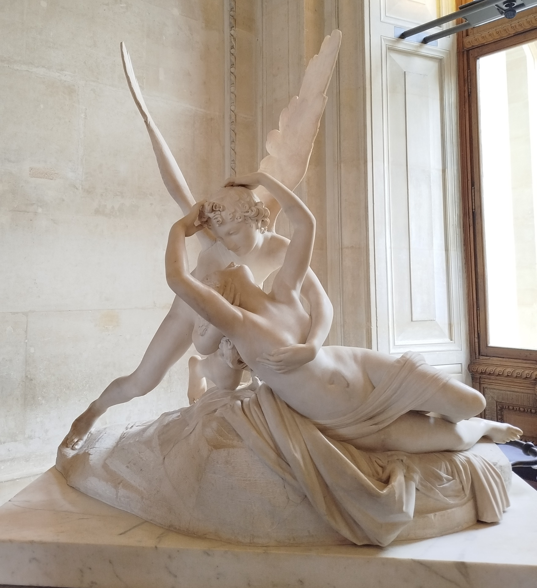

Merhaba ben Sibel ⏾.
Burada sevdiğim kitapları, şarkıları, mitleri ve kalbimden taşan diğer şeyleri paylaşacağım.
Hoş geldin! ✮ ⋆ ˚｡𖦹 ⋆｡°✩
જ⁀➴ ♡Cupid ve Psyche♡ જ⁀➴
Blog'uma bana mitolojiyi sevdiren bu aşk hikayesiyle başlamak istedim.En sonda da Louvre müzesinde çektiğim heykeli sizlerle paylaşmış olacağım. Psyche, Milet kralının üç kızından küçük olanı idi. Ablalarıyla kıyaslandığında hem huy hem de güzellik açısından üstün bir kızdı. Milet halkı tarafından sevgi ve hayranlık görmekteydi. Psyche o kadar güzeldi ki artık Afrodit onu kıskanmaya başlamıştı. Kızın güzelliğine hayran kalan insanlar ona tapıyor ve bazıları Afrodit'i tamamen unutuyorlardı. Tanrıça Afrodit, aşk ustası olan oğlu Eros'tan(Cupid, Eros'un Roma Mitolojisindeki karşılığıdır.), erkeklerin Psyche'ye olan arzularını yok etmesini ve kızı yeryüzünde var olan en iğrenç ve en çirkin yaratığa aşık etmesini istedi. Ancak Eros bu isteği yerine getiremedi çünkü Psyche'yi görür görmez ona aşık oldu. Psyche karşısına çıkan bir çok erkeğe rağmen kimseyle evlenmemiş ve gerçek aşkı beklemekteydi. Ablalarının evlenip sıranın ona gelmesine rağmen bir türlü evlenmeyen Psyche'nin babası bu duruma üzülerek bir Apollon rahibine danıştı. Rahip onlara kızlarını bir uçurumun kenarına bırakmalarını, orada kızlarının çok çirkin bir canavarla evlenmesi gerektiğini söyledi. Babası çok üzülerek kızı Psyche'ye gelinlik giydirerek bir ağıt eşliğinde uçurumun kenarına bıraktı. Fakat aslında Apollon ile önceden görüşürüp bunları dedirten Eros'tu. Psyche terk edildiği uçurum kenarından atlamaya yeltendi ancak atladığı anda Zephyr, diğer adıyla batı rüzgarı, onu yakalandı ve Eros'un onu saklamak için ördüğü pamuk ipliğine bağlı bir büyü ile korunan kaleye götürdü. Burada Afrodit'in gözünde uzak olacaktı ve güzellik tanrıçası onu ölü sanacaktı. Eros kaleye geldi ve bu kalede birlikte mutlu bir çift aşık olarak yaşadılar. Ancak Eros'un Psyche'den tek bir isteği vardı: Asla Eros'un yüzünü gündüz gözüyle göremezdi, hatta onun kim olduğunu bile bilemezdi. Psyche, sevdiği adamla tüm tanrıların gözünden uzak, sakin ve güzelliklerle dolu bir kalede yaşamayı yeterince değerli bir şey olarak gördüğünden, onu hiç görmemeyi ve kim olduğunu bilmemeyi dert etmedi. Eros sadece geceleri kaleye gelirdi. Çünkü Güneş'in ışığı, gündüzleri Psyche'nin Erosu tanımasını sağlardı. Bu yüzden bir kez bile aşklarını gün yüzünde yaşayamadan birbirlerini bile görmeden uzun zaman geçirdiler. Bu sürede Psyche halinden memnundu. Hatta eski evindeki ailesine mektuplar yazmaya, oradaki hayatından bahsetmeye başlamıştı bile. Bir süre sonra Psyche hamile kaldı. Aklındaki tek soru ise asla görmediği bir adam ile nasıl bir bebek yetiştireceği idi. Bu mektupları alan ailesi, önce Psyche'in hayatta olduğunu, mutlu ve refah içinde olduğunu öğrenmekten mutlu oldu. Ancak sonra, kıskanç ablası onu ziyaret etmek istedi. Psyche'nin bir zamanlar atladığı uçurumdan atladı ve Zephyr, tıpkı Psyche'i kurtardığı gibi onu da kurtarıp saraya taşıdı. Burada Psyche'nin hayatını gören ablası, o hayata sahip olmak istedi. Psycheye asla görmediği bir adamla bebek yetiştiremeyeceğini ve aslında o adamın iğrenç bir ejderha olduğunu anlattı. Psycheye uzun zamandır dokunduğu o kanatların bir ejderhaya ait olabileceğini aklına getirmemişti. Fakat şüphe tohumu aklına ekilmişti bir kere. Ne yapıp edip sevgilisini görmeye karar verdi. Eros uyurken onun yanına sessizce yaklaştı ve bir gaz lambası ışığı yardımıyla yüzüne baktı. Gördüğü varlığın bir ejderha olmadığını aynı anda mutluluk ve dehşet içinde gördü. Tanrı Eros'u anında tanımıştı, zaten öylesine güzel bir yüz başka kime ait olabilirdi ki? Kandırılmanın verdiği üzüntü ve sevgilisine ettiği ihaneti telafi edemeyecek olmasının ümitsizliği ile elindeki gaz lambasını Eros'un üstüne düşürdü. Eros hayret içinde uyandı ve olanları anında anladı. Büyük bir ümitsizlik içinde Psyche kurduğu bu sarayın yıkılacağını ve Afrodit'ten korunmasının tek yolu olan gizlilik büyüsünün, sarayla birlikte yok olacağını söyledi. Çünkü büyünün tek kaynağı Psyche'nin, Eros'un kim olduğunu bilmemesine dayanıyordu. Son olarak "zaten bir tanrı ve bir ölümlü birbirini nasıl eşit sevebilir ki?" diyerek kanatlarını açtı ve bir daha Psycheyi görmemek üzere uzaklaştı. Psyche bu olanlara çok üzüldü ve dışarı çıkıp her yerde Eros'u aramaya koyuldu fakat Afrodit ile yolu kesildi. Afrodit onun ölmemesine çok sinirlenmiş ve ona yapması imkansız üç görevi yapması karşılığında Eros'u yeniden görebileceğini söylemişti. Ama Psyche görevlerin imkansız olduğunu bilmiyordu. İlk görevi Psyche'nin boyunu aşan bir yığın tohumu 5 farklı türe sadece 1 gecede ayıklamaktı. Psyche umutsuzca göreve koyuldu. Tam pes etmek üzere iken tanrıların kralı Zeus tarafından gönderilen karıncalar bütün tohumları anında kategorize etti. Çünkü Zeus, Eros'un tarafında olduğunu göstermek istiyordu. İkinci görevi yakalaması imkansız olan bir koyunun yünlerini getirmesini istedi. Bu sefer de bir nehir tanrısı Eros'a olan yakınlığını göstermek adına Psyche'ye yardım etti ve ona koyunun koşarken dallarda bıraktığı yünleri kullanmasını söyledi. Üçüncü ve son görevi ise yeraltı kraliçesi Peshapone'nin güzelliğini bir kutuya koymaya ikna etmekti.Ama Psyche yeraltı dünyasına nasıl gideceğini bilmiyordu. Bir ses ona yeraltı dünyasının gardiyanı Kerebrosa arpa kekleri vermesini Styks nehrini geçirecek kayıkçıya bir altın para vermesini söyledi. Böylece yeraltı dünyasına girmeyi başaran Psyche azmi ile Persaphone'yi etkiledi ve Persaphone ona istediğini verdi. Son görevini tamamlayan Psyche tam Afrodit'in sarayına girecekken Persaphone'nin verdiği kutuyu merakından açmak istedi. Fakat kutu güzellik yerine uyku ile doldurulmuştu. O anda Psyche sonsuz bir uykuya daldı. Psyche'nin onun için yaptıklarını öğrenen Eros, Psyche'nin sonsuz uykuya mahkum olduğunu öğrenince hemen onun yanına uçtu. Onun korkusuzluğu ve bilinmeyenle hiç tereddüt etmeden yüzleşmesi, kendisinin dengi olmaktan da öte olduğunu söyledi. Eros Psycheyi ambrosia (ambrozya) ile besledi. Yani tanrıların nektarı ve yegane yiyeceği ile. Bu sayede o da tüm tanrıların huzurunda Moiraların kararı ile ölümsüz oldu. Ölümsüz olmasının kısa bir süre ardından Psyche çocuğunu doğurdu. Bu çocuğa Hedone (haz) adını verdiler. "Psikoloji", "psikolog" gibi kelimeler Psycheden gelir. Psyche aynı zamanda ruh anlamına da gelir.
